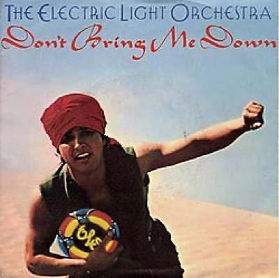
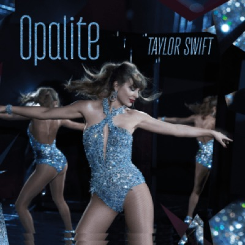
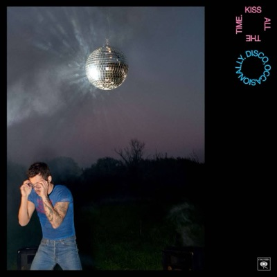
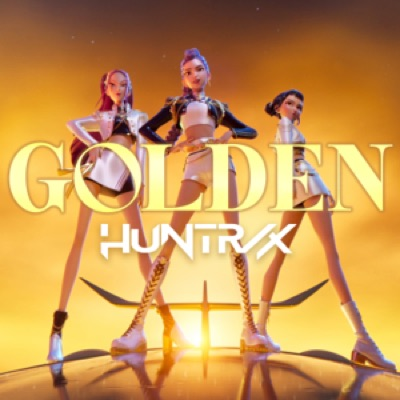
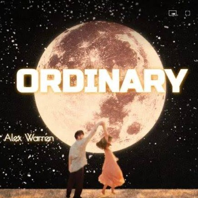
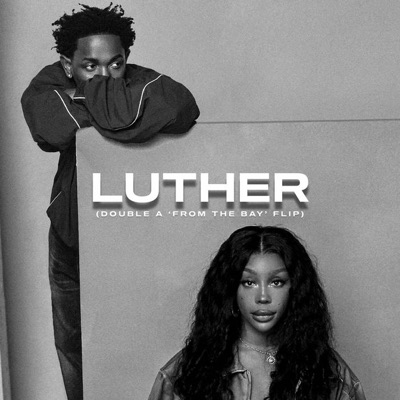
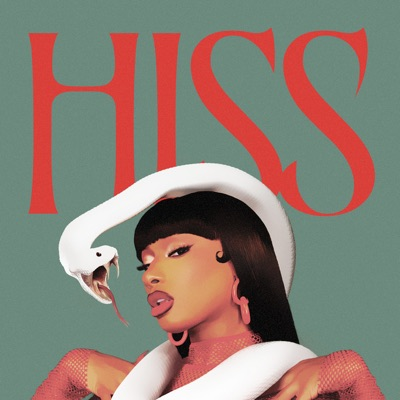

“Don't Bring Me Down”
by Electric Light OrchestraWondering why Jeff Lynne repeatedly sings the word “groose” after the song's title line? Apparently it was a made-up place-keeper word to fill a gap in the vocals when he was improvising the lyrics. When the German engineer Reinhold Mack heard the ELO frontman's demo, he asked Lynne how he knew “gruss” means “greetings” in his country's language. Upon learning the German meaning, Lynne decided to leave it in.

“Opalite”
by Taylor SwiftSwift uses opalite — a synthetic version of the natural opal — as her central metaphor in this song. It's a gleaming stand-in for constructed happiness, suggesting that maybe joy doesn't have to be purely organic; maybe you can make it yourself after heartbreak. It's also a wink to Travis Kelce, whose birthstone is opal.

“Aperture”
by Harry StylesIn photography, an aperture is the little adjustable hole that decides how much light you're allowed to have, a bit like the pupil of your eye, except less prone to watering in a stiff breeze. Harry Styles took that neat bit of optical science and turned it into a life philosophy with “Aperture,” the lead single from his fourth album, Kiss All the Time. Disco, Occasionally, his first new music in nearly four years.

“Golden”
by Huntr/x“Golden” is a 2025 single performed by the fictional K-pop girl group Huntr/x in the animated musical fantasy film 'KPop Demon Hunters.' In the film, Huntr/x is comprised of the characters Rumi, Mira, and Zoey, voiced by K-Pop singer-songwriter EJAE, American R&B singer Audrey Nuna, and Korean-American singer REI AMI.
In the film, Huntr/x lead double lives as demon hunters. They square off against their sparkly yet sinister rivals, the Saja Boys, a boy band whose members are secretly demons that are using their popularity to steal souls.

“Ordinary”
by Alex WarrenWarren tied the knot with longtime partner Kouvr Annon in 2024, and he's said in interviews how their relationship influenced the song. He describes “Ordinary” as a love letter to the kind of romance that brings both passion and stability.

“Luther”
by Kendrick LamarThe track opens with a sample of Cheryl Lynn and Luther Vandross' 1982 cover of Marvin Gaye and Tammi Terrell's 1967 song “If This World Were Mine.” That lush, velvety soundscape sets the tone, and the song's title — “Luther” — is an unmistakable homage to Vandross, a master of translating love and longing into music. With Vandross's voice as a spiritual guide, Lamar paints a picture of devotion and empowerment, positioning himself as both protector and partner, someone who lifts up those he loves while imagining a brighter, kinder world for them to share.

“Hiss”
by Megan Thee StallionThe song is Megan Thee Stallion's clapback to all her haters and enemies. She flaunts her swagger, skill, and A-list rapper status, shutting down anyone trying to bring her down or ride her fame. The H-Town Hottie spits straight-up venom at those who've crossed her, declaring her confidence and power in the face of all the drama. It is Megan's serious warning to anyone thinking they can mess with her. “I'm saying a hit dog gonna holler — that's it,” the snake queen said of “Hiss” on The Breakfast Club.
“I Had Some Help”
by Post Malone“I Had Some Help” is the lead single from Post Malone's first country album. He ropes in Nashville star Morgan Wallen for a down-home duet about the messy realities of a love gone south.